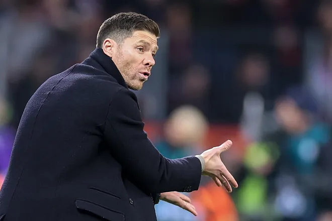

bienvenida
Hola, Bienvenidos a MataCenteno tu sitio web del fútbol
mundial.
Espero que tu visita a ésta plataforma sea de lo más
placentera y
quiero que sepas que siempre seras bienvenido

Noticias
La tarjeta azul: La nueva regla que revolucionara el futbol
Michel dice que ganar en el Bernabeu seria algo mundial

El relevo generacional de los Diablos Rojos

La historia del Neverkusen y de como Xabi Alonso los puede llevar a la gloria


Partidos para la semana del 13 y 14/02/2024 y
semana del 20 y 21/02/2024 Resultados de partidos de ida del Martes 13/02:
- RB Leipzig 0 vs Real Madrid CF 1
- FC Copenhague 1 vs Manchester City FC 3
- Lazio 1 vs Bayern Munich 0
- PSG FC 2 vs Real Sociedad 0
Este martes 13 de febrero, un dia antes de celebrarse el dia de la amistad
recibia el Leipzig al Madrid en Alemania, en donde el encuentro no
tuvo nada de amistoso, ya que hubo ciertos roses entre los jugadores
de ambas escuadras. Fue un partido que comenzo con polemica ya que
se anulo un gol del equipo aleman. En el primer tiempo no hubo
situaciones de verdadero peligro, hasta que al minuto 48 del segundo
tiempo con una jugada de Brahim Diaz, este metio un zurdazo a la
arqueria alemana y el Madrid se iba arriba 1 a 0. El Leipzig con los
cambios que hizo en el segundo tiempo estuvo cerca de empatar pero
no fue este el caso. El Madrid tuvo una gran jugada por parte de
Vinicius llevandose a un rival y dandole un toque a la pelota la
coloco en el poste de la arqueria, hubiese sido un golazo.
Tchouameni de nuevo jugo en la central acompañado por Nacho y se le
vio bien en esa posicion. Otro que se esta afianzando es el portero
Andriy Lunin, que tuvo nueve atajadas en este partido.
El partido de vuelta sera en Madrid el miercoles 6 de marzo
Proximos partidos de ida de octavos de final: Martes 20/02/2024:
- PSV Eindhoven vs Borussia Dortmund Hora venezolana: 16:00
- Inter Milan vs Atletico de Madrid Hora venezolana: 16:00
- SSC Napoles vs FC Barcelona Hora venezolana: 16:00
- FC Oporto vs Arsenal Hora venezolana: 16:00
Europa League

En este mes de febrero se jugaran los partidos de play offs, donde
se enfrentaran los 8 equipos que quedaron de subcampeones de cada
grupo de la fase de grupos de esta competicion contra los 8
equipos que quedaron terceros en la fase de grupos de la Champions
de esta temporada
Como goleador de la competicion tenemos a Joao Pedro del Brighton
con 6 goles y como mejor asistidor a Kostas Fortounis del Olympiakos
con 6 asistencias
Los partidos de ida de Play Offs de este jueves 15/02 son los siguientes:
- FC Shakhtar Donetsk vs Olympique Marsella Hora venezolana 13:45 pm
- Young Boys vs Sporting Portugal Hora venezolana 13:45 pm
- Galatasary SK vs AC Sparta Praga Hora venezolana 13:45 pm
- Feyenoord Rotterdam vs AS Roma Hora venezolana 13:45 pm
- SC Braga vs Qarabag FK Hora venezolana 16:00 pm
- AC Milan vs FC Stade Rennes Hora venezolana 16:00 pm
- RC Lens vs SC Friburgo Hora venezolana 16:00 pm
- Benfica vs Toulouse FC Hora venezolana 16:00 pm
Opinion
El partido del cual voy a dar una honesta y humilde opinion,
es el del Aston Villa vs Manchester United, donde el
Manchester comenzo atacando y logro un gol tempranero
por parte del delantero centro Rasmus Hojlund.
Luego, el Aston Villa domino el partido y echo para
atras al Manchester, pero las paradas de Onana impidieron
que los villanos empataran el partido.
Pero en el segundo tiempo el Villa empata el partido
tras una serie de rebotes en el area del United, y el
jugador brasileño, Douglas Luiz, empata el partido y
la algarabia inunda el Villa Park.
Pero no duro mucho, porque en un ataque del Manchester
centro de Dalot por la derecha y un cabesazo de
Mctominay, que habia entrado como cambio por Mainoo,
manda la pelota a las redes villanas y el United
a pocos minutos de terminar el partido, lo gana
El United jugo bien en defensa y en ataque supo
aprovechar las pocas ocasiones pero quien se lleva
los laureles es el portero Onana quien en mas de una
ocasion salvo el arco de los Diablos Rojos
Preolimpico 2024
Tabla de posiciones
- Paraguay 7 ptos
- Argentina 5 ptos
- Brasil 3 ptos
- Venezuela 1 pto
Resultados de los partidos del lunes 05/02/2024:
- Argentina 2 Venezuela 2
- Paraguay 1 Brasil 0
Resultados de los partidos del Jueves 08/02/2024:
- Argentina 3 Paraguay 3
- Venezuela 1 Brasil 2
Resultados de los partidos del Domingo 11/02/2024:
- Argentina 1 vs Brasil 0
- Venezuela 0 vs Paraguay 2
Campeon: Paraguay Segundo lugar: Argentina Estos son los clasificados a Paris 2024. Les deseamos la mejor de la suerte
Partido Venezuela 0 vs Paraguay 2 Domingo 11/02/2024
Venezuela comenzó con buen pie el partido, ya que por un rebote que dio el
portero de Paraguay, aprovechado con un cabesazo a las redes por el Pipa
Vivas, la seleccion Vinotinto se iba arriba con marcador 1 a 0, pero el
VAR anulo el gol.
Paraguay tenia el dominio del balon y atacaba a placer, para que al minuto
48 de penal, el pichichi del torneo, Diego Gomez, metiera un gol y
Paraguay ganaba 1 a 0 a Venezuela.
Luego a los 75 el delantero Marcelo Perez de Paraguay, anoto el segundo
y ultimo gol del encuentro. Venezuela intento en ocasiones pero no pudo
concretar.
Por otro lado, Argentina le gano a Brasil 1 a 0, quedando como segundo
clasificado para Paris 2024. Como campeon del Preolimpico quedo
Paraguay y el pichichi del torneo es Diego Gomez de Paraguay y actual
compañero de Messi en el Inter Miami.
Pienso que la seleccion paraguaya es justa campeona ya que obtuvo dos
triunfos y un empate y demostro tener un dominio de los partidos
excelente. Lamentablemente la seleccion Vinotinto no clasifico a las
olimpiadas pero quiero expresar mi orgullo como venezolano y fanatico
del futbol que soy, que Venezuela tiene seleccion para rato y con estos
jugadores sumandose a la absoluta, creo que tenemos bastantes chances
en los proximos compromisos.
Partidos para el fin de semana
Partidos del Viernes 09/02/2024
Hora 15:00 pm hora venezolana: Portuguesa vs Academia Puerto Cabello
Hora 15:45 pm hora venezolana: US Salernitana vs Empoli
Hora 15:30 pm hora venezolana: Borussia Dortmund vs Friburgo
Hora 16:00 pm hora venezolana: Cadiz CF vs Real Betis
Partidos del Sabado 10/02/2024
Hora 8:30 am hora venezolana: Manchester City vs Everton
Hora 11:00 am hora venezolana: FC Fulham vs AFC Bournemouth
Hora 11:00 am hora venezolana: Liverpool vs Burnley
Hora 11:00 am hora venezolana: Luton Town vs Sheffield united FC
Hora 11:00 am hora venezolana: Tottenham Hotspur vs Brighton & Hove Albion FC
Hora 11:00 am hora venezolana: Wolverhampton Wanderers vs Brentford FC
Hora 13:30 pm hora venezolana: Nottingham Forest vs Newcastle united
Hora 9:00 am hora venezolana: Alaves vs Villarreal
Hora 11:15 am hora venezolana: Real Sociedad vs Osasuna
Hora 13:30 pm hora venezolana: Real Madrid vs Girona
Hora 16:00 pm hora venezolana: Las Palmas vs Valencia
Hora 10:00 am hora venezolana: Cagliari vs Lazio
Hora 13:00 pm hora venezolana: Roma vs Inter de Milan
Hora 15:45 pm hora venezolana: Sassuolo vs Torino
Hora 10:30 am hora venezolana: Augsburgo vs RB Leipzig
Hora 13:30 pm hora venezolana: Bayern Leverkusen vs Bayern Munich
Hora 16:00 pm hora venezolana: PSG vs Lille
Hora 15:00 pm hora venezolana: Zamora vs Deportivo Tachira
Hora 17:45 pm hora venezolana: Carabobo vs Inter
Hora 20:30 pm hora venezolana: Dep La Guaira vs Monagas
Partidos del Domingo 11/02/2024
Hora 10:00 am hora venezolana: West Ham United vs FC Arsenal
Hora 12:30 pm hora venezolana: Aston Villa vs Manchester United
Hora 9:00 am hora venezolana: Getafe vs Celta de Vigo
Hora 11:15 am hora venezolana: Mallorca vs Rayo Vallecano
Hora 13:30 pm hora venezolana: Sevilla vs Atletico de Madrid
Hora 16:00 pm hora venezolana: FC Barcelona vs Granada
Hora 7:30 am hora venezolana: Fiorentina vs Frosinone
Hora 10:00 am hora venezolana: Bologna vs Lecce
Hora 10:00 am hora venezolana: AC Monza vs Hellas Verona
Hora 13:00 pm hora venezolana: Genova vs Atalanta
Hora 15:45 pm hora venezolana: Milan vs Napoli
Hora 15:45 pm hora venezolana: Niza vs AS Monaco
Hora 15:00 pm hora venezolana: Rayo Zuliano vs Caracas
Futbolistas del ayer
Marco Van Basten, nacido en Utrecht,Paises Bajos en 1964, uno de los mejores futbolistas de la
historia. Fue escogido como el segundo mejor futbolista holandes, solo despues de Cruyf.
Jugo como delantero centro, como unico punta y a veces acompañado de otro delantero. Jugo en el
Ajax de Amsterdam, donde gano varios trofeos locales, entre los que estan la Eredivisies, y ademas
una Recopa de Europa.
Tambien jugo en el Milan de la serie A de Italia, donde jugo junto a sus compañeros de seleccion
como Ruud Gullit y Frank Rickard. En esta escuadra, gano dos copas de Europa, dos Super Copa de
Europa y dos Copas Intercontinentales
Una grave lesion hizo que se retirara de las canchas en 1995. Luego fue entrenador de la seleccion
de Paises Bajos en el Mundial del 2006 y Eurocopa del 2008. Mas tarde fue DT del Ajax, del AZ Alkmar,
del Heerenven y otros equipos de la liga de Paises Bajos
Yo no lo vi jugar, no vivi esa epoca del futbol cuando el jugaba, pero he visto uno que otro partido
del Milan de los noventa y era un buen jugador, de esos que se echan el equipo al hombro, que todo
el partido estan apagados, pero con una sola jugada, te cambiaba el partido